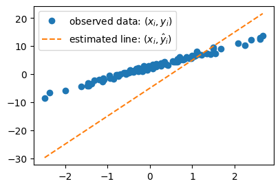
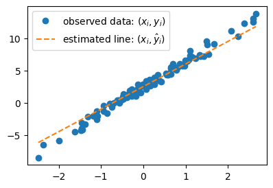

# {{<video https://youtu.be/playlist?list=PLQqh36zP38-w2wjg7vQJHPP89wWGSq-MZ&si=J0lxSPEePOD-5BOL >}}01wk-2: xxxx

1. 강의영상
2. Imports
import torch
import matplotlib.pyplot as plt /home/cgb3/anaconda3/envs/stgcn-playground/lib/python3.10/site-packages/tqdm/auto.py:21: TqdmWarning: IProgress not found. Please update jupyter and ipywidgets. See https://ipywidgets.readthedocs.io/en/stable/user_install.html
from .autonotebook import tqdm as notebook_tqdm3. 회귀모형 – intro
A. 아이스 아메리카노 (가짜자료)
- 카페주인인 박혜원씨는 온도와 아이스아메리카노 판매량이 관계가 있다는 것을 알았다. 구체적으로는
“온도가 높아질 수록 (=날씨가 더울수록) 아이스아메리카노의 판매량이 증가”
한다는 사실을 알게 되었다. 이를 확인하기 위해서 아래와 같이 100개의 데이터를 모았다.
temp = [-2.4821, -2.3621, -1.9973, -1.6239, -1.4792, -1.4635, -1.4509, -1.4435,
-1.3722, -1.3079, -1.1904, -1.1092, -1.1054, -1.0875, -0.9469, -0.9319,
-0.8643, -0.7858, -0.7549, -0.7421, -0.6948, -0.6103, -0.5830, -0.5621,
-0.5506, -0.5058, -0.4806, -0.4738, -0.4710, -0.4676, -0.3874, -0.3719,
-0.3688, -0.3159, -0.2775, -0.2772, -0.2734, -0.2721, -0.2668, -0.2155,
-0.2000, -0.1816, -0.1708, -0.1565, -0.1448, -0.1361, -0.1057, -0.0603,
-0.0559, -0.0214, 0.0655, 0.0684, 0.1195, 0.1420, 0.1521, 0.1568,
0.2646, 0.2656, 0.3157, 0.3220, 0.3461, 0.3984, 0.4190, 0.5443,
0.5579, 0.5913, 0.6148, 0.6469, 0.6469, 0.6523, 0.6674, 0.7059,
0.7141, 0.7822, 0.8154, 0.8668, 0.9291, 0.9804, 0.9853, 0.9941,
1.0376, 1.0393, 1.0697, 1.1024, 1.1126, 1.1532, 1.2289, 1.3403,
1.3494, 1.4279, 1.4994, 1.5031, 1.5437, 1.6789, 2.0832, 2.2444,
2.3935, 2.6056, 2.6057, 2.6632]sales= [-8.5420, -6.5767, -5.9496, -4.4794, -4.2516, -3.1326, -4.0239, -4.1862,
-3.3403, -2.2027, -2.0262, -2.5619, -1.3353, -2.0466, -0.4664, -1.3513,
-1.6472, -0.1089, -0.3071, -0.6299, -0.0438, 0.4163, 0.4166, -0.0943,
0.2662, 0.4591, 0.8905, 0.8998, 0.6314, 1.3845, 0.8085, 1.2594,
1.1211, 1.9232, 1.0619, 1.3552, 2.1161, 1.1437, 1.6245, 1.7639,
1.6022, 1.7465, 0.9830, 1.7824, 2.1116, 2.8621, 2.1165, 1.5226,
2.5572, 2.8361, 3.3956, 2.0679, 2.8140, 3.4852, 3.6059, 2.5966,
2.8854, 3.9173, 3.6527, 4.1029, 4.3125, 3.4026, 3.2180, 4.5686,
4.3772, 4.3075, 4.4895, 4.4827, 5.3170, 5.4987, 5.4632, 6.0328,
5.2842, 5.0539, 5.4538, 6.0337, 5.7250, 5.7587, 6.2020, 6.5992,
6.4621, 6.5140, 6.6846, 7.3497, 8.0909, 7.0794, 6.8667, 7.4229,
7.2544, 7.1967, 9.5006, 9.0339, 7.4887, 9.0759, 11.0946, 10.3260,
12.2665, 13.0983, 12.5468, 13.8340]여기에서 temp는 평균기온이고, sales는 아이스아메리카노 판매량이다. 평균기온과 판매량의 그래프를 그려보면 아래와 같다.
plt.plot(temp,sales,'o')
오늘 바깥의 온도는 0.5도 이다. 아이스 아메라카노를 몇잔정도 만들어 두면 좋을까?
B. 가짜자료를 만든 방법
- 방법1: \(y_i= w_0+w_1 x_i +\epsilon_i = 2.5 + 4x_i +\epsilon_i, \quad i=1,2,\dots,n\)
torch.manual_seed(43052)
x,_ = torch.randn(100).sort()
eps = torch.randn(100)*0.5
y = 2.5 + 4*x + eps x[:5], y[:5](tensor([-2.4821, -2.3621, -1.9973, -1.6239, -1.4792]),
tensor([-8.5420, -6.5767, -5.9496, -4.4794, -4.2516]))- 방법2: \({\bf y}={\bf X}{\bf W} +\boldsymbol{\epsilon}\)
- \({\bf y}=\begin{bmatrix} y_1 \\ y_2 \\ \dots \\ y_n\end{bmatrix}, \quad {\bf X}=\begin{bmatrix} 1 & x_1 \\ 1 & x_2 \\ \dots \\ 1 & x_n\end{bmatrix}, \quad {\bf W}=\begin{bmatrix} 2.5 \\ 4 \end{bmatrix}, \quad \boldsymbol{\epsilon}= \begin{bmatrix} \epsilon_1 \\ \dots \\ \epsilon_n\end{bmatrix}\)
X = torch.stack([torch.ones(100),x],axis=1)
W = torch.tensor([[2.5],[4.0]])
y = X@W + eps.reshape(100,1)X[:5,:], y[:5,:](tensor([[ 1.0000, -2.4821],
[ 1.0000, -2.3621],
[ 1.0000, -1.9973],
[ 1.0000, -1.6239],
[ 1.0000, -1.4792]]),
tensor([[-8.5420],
[-6.5767],
[-5.9496],
[-4.4794],
[-4.2516]]))- ture와 observed data를 동시에 시각화
plt.plot(x,y,'o',label=r"observed data: $(x_i,y_i)$")
plt.plot(x,2.5+4*x,'--',label=r"true: $(x_i, 4x_i+2.5)$ // $y=4x+2.5$ ")
plt.legend()
C. 회귀분석이란?
- 관측한 자료 \((x_i,y_i)\) 가 있음 \(\to\) 우리는 \((x_i,y_i)\)의 관계를 파악하여 새로운 \(x\)가 왔을때 그것에 대한 예측값(predicted value) \(\hat{y}\)을 알아내는 법칙을 알고 싶음 \(\to\) 관계를 파악하기 위해서 \((x_i, y_i)\)의 산점도를 그려보니 \(x_i\)와 \(y_i\)는 선형성을 가지고 있다는 것이 파악됨 \(\to\) 오차항이 독립이고 어쩌고 저쩌고… \(\to\) 하여튼 \((x_i,y_i)\) 를 “적당히 잘 관통하는” 어떠한 하나의 추세선을 잘 추정하면 된다.
- 회귀분석이란 산점도를 보고 적당한 추세선을 찾는 것이다. 좀 더 정확하게 말하면 \((x_1,y_1) \dots (x_n,y_n)\) 으로 \(\begin{bmatrix} \hat{w}_0 \\ \hat{w}_1 \end{bmatrix}\) 를 최대한 \(\begin{bmatrix} 2.5 \\ 4 \end{bmatrix}\)와 비슷하게 찾는 것.
given data : \(\big\{(x_i,y_i) \big\}_{i=1}^{n}\)
parameter: \({\bf W}=\begin{bmatrix} w_0 \\ w_1 \end{bmatrix}\)
estimated parameter: \({\bf \hat{W}}=\begin{bmatrix} \hat{w}_0 \\ \hat{w}_1 \end{bmatrix}\)
- 더 쉽게 말하면 아래의 그림을 보고 “적당한” 추세선을 찾는 것이다.
plt.plot(x,y,'o',label=r"observed data: $(x_i,y_i)$")
plt.legend()
4. 손실함수
# 예제1 – \((\hat{w}_0,\hat{w}_1)=(-5,10)\)을 선택하여 선을 그려보고 적당한지 판단해보자
plt.plot(x,y,'o',label=r"observed data: $(x_i,y_i)$")
#plt.plot(x,-5+10*x,'--')
What = torch.tensor([[-5.0],[10.0]])
plt.plot(x,X@What,'--',label=r"estimated: $(x_i,\hat{y}_i)$")
plt.legend()
#
# 예제2 – \((\hat{w}_0,\hat{w}_1)=(2.5,3.5)\)을 선택하여 선을 그려보고 적당한지 판단해보자
plt.plot(x,y,'o',label=r"observed data: $(x_i,y_i)$")
#plt.plot(x,-5+10*x,'--')
What = torch.tensor([[2.5],[3.5]])
plt.plot(x,X@What,'--',label=r"estimated: $(x_i,\hat{y}_i)$")
plt.legend()
#
# 예제3 – \((\hat{w}_0,\hat{w}_1)=(2.3,3.5)\)을 선택하여 선을 그려보고 적당한지 판단해보자
plt.plot(x,y,'o',label=r"observed data: $(x_i,y_i)$")
#plt.plot(x,-5+10*x,'--')
What = torch.tensor([[2.3],[3.5]])
plt.plot(x,X@What,'--',label=r"estimated: $(x_i,\hat{y}_i)$")
plt.legend()#
# 예제4 – 예제2의 추세선과 예제3의 추세선 중 뭐가 더 적당한가?
- (고민) 왠지 예제2가 더 적당하다고 답해야할 것 같은데.. 육안으로 판단하기 까다롭다..
- 적당함을 수식화 할 수 없을까?
- “적당한 정도”를 판단하기 위한 장치: loss의 개념 도입
\(loss = \sum_{i=1}^{n}(y_i- \hat{y}_i)^2 = \sum_{i=1}^{n}\big(y_i - (\hat{w}_0+\hat{w}_1x_i)\big)^2\)
\(=({\bf y}-\hat{\bf y})^\top({\bf y}-\hat{\bf y})=({\bf y}-{\bf X}\hat{\bf W})^\top({\bf y}-{\bf X}\hat{\bf W})\)
- loss의 특징
- \(y_i \approx \hat{y}_i\) 일수록 loss 값이 작음
- \(y_i \approx \hat{y}_i\) 이 되도록 \((\hat{w}_0, \hat{w}_1)\)을 작 찍으면 loss 값이 작음
- 주황색 점선이 “적당할수록” loss 값이 작음 (그럼 우리 의도대로 된거네?)
- loss를 써먹어보자.
What = torch.tensor([[2.5],[3.5]])
print(f"loss: {torch.sum((y - X@What)**2)}")
What = torch.tensor([[2.3],[3.5]])
print(f"loss: {torch.sum((y - X@What)**2)}")loss: 55.074012756347656
loss: 59.3805046081543What = torch.tensor([[2.5],[3.5]])
print(f"loss: {(y - X@What).T @ (y - X@What)}")
What = torch.tensor([[2.3],[3.5]])
print(f"loss: {(y - X@What).T @ (y - X@What)}")loss: tensor([[55.0740]])
loss: tensor([[59.3805]])#